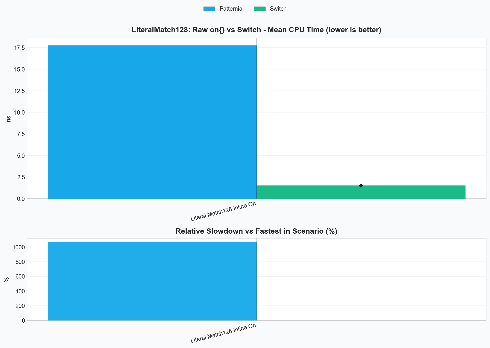
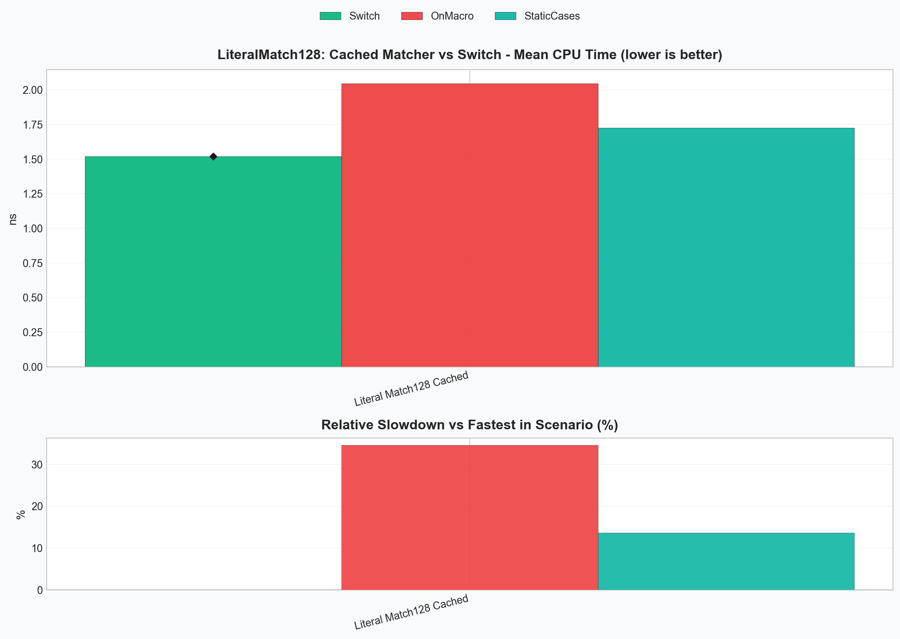

Patternia Performance - v0.8.2¶
Published: 2026-03-03
Focus:
- establish the lowering engine as the main optimization architecture
- push static literal dispatch closer to the
switchbaseline - separate dispatch quality from matcher-construction overhead
Summary¶
v0.8.2 moves Patternia's performance work from isolated fast paths to a general lowering engine.
This version focuses on one practical target:
- make keyed pattern chains behave as closely as possible to hand-written
switchcode - keep the optimization scalable beyond one special-case pattern family
- reduce the matcher-construction overhead that appears in
match(x) | on(...)
The result is a two-part improvement:
- the compiler-visible static literal path is now close to the
switchbaseline - the pipeline syntax can reuse a cached matcher through
static_on(...)orPTN_ON(...)
The benchmark discussion in this note uses the 128-way literal scenario because it is large enough to expose both sides of the problem:
- how close lowering gets to hand-written control flow
- how expensive raw inline matcher construction still is
Benchmark Snapshot¶
Raw pipeline form vs switch¶
This chart answers the simple question: what happens if you write the direct pipeline form and call it in a hot loop?

Cached matcher forms vs switch¶
This chart isolates the same 128-way static-literal workload after matcher construction is moved out of the hot path.

Problems We Needed To Solve¶
Problem 1: Runtime literal factories hide the dispatch key¶
lit(value) is a general runtime factory.
That is the right API for dynamic values and strings, but it means the lowering stage cannot see the literal as a compile-time key:
match(x) | on(
lit(1) >> 1,
lit(2) >> 2,
_ >> 0
);
For this shape, Patternia can still build a specialized linear literal path, but it cannot reliably target switch-like lowering.
Problem 2: match(x) | on(...) pays matcher construction cost every call¶
Even when the match logic itself lowers well, the inline pipeline form still constructs the whole matcher object on every evaluation:
match(x) | on(
lit<1>() >> 1,
lit<2>() >> 2,
_ >> 0
);
For large case sets, this construction cost dominates the dispatch cost.
Problem 3: Optimization logic did not scale¶
Before v0.8.2, performance logic was drifting toward isolated special cases in
optimize.hpp and eval.hpp.
That approach does not scale for future keyed scenarios such as:
- static literals
- simple variant alternative dispatch
- guarded variant cases that still expose a primary key
Patternia needed a shared lowering model, not one more fast path.
Initial Solution¶
The first step was to expose a compile-time literal form:
lit<42>()
This gives the lowering stage a stable key that can move into type-level metadata and plan selection.
The second step was to validate the idea with a narrow benchmark:
- 128 static literal cases
- one trailing wildcard default
- direct comparison against a hand-written
switch
That experiment confirmed two separate facts:
- static keyed lowering works
- raw
match(x) | on(...)still loses badly if matcher construction remains in the hot path
That is why v0.8.2 treats lowering and matcher reuse as separate concerns.
Lowering Engine Architecture¶
v0.8.2 organizes the optimizer around a small internal pipeline:
case DSL
-> case_analysis
-> case_sequence_ir
-> lowering_analysis
-> dispatch_plan
-> eval_cases_with_dispatch_plan(...)
The main pieces are:
| Component | Responsibility |
|---|---|
case_analysis |
Analyze one case into discriminator, residual work, and binding shape |
case_sequence_ir |
Aggregate the full case chain and decide whether lowering is legal |
lowering_analysis |
Expose legality and plan-family signals to the planner |
dispatch_plan |
Carry the concrete execution shape selected for the evaluator |
eval_cases_with_dispatch_plan(...) |
Execute the chosen plan without re-running planner logic |
The design is built around three legality grades:
| Rule | Meaning | Current result |
|---|---|---|
full |
The key alone can drive the dispatch path | direct lowering |
bucketed |
The key narrows the search, but some residual replay remains | per-key bucket replay |
none |
The planner cannot prove a safe keyed path | sequential evaluation |
In code, this lives in:
Algorithms and Principles¶
1. Dense static-literal lowering¶
This is the main new full path in v0.8.2.
Patternia first checks whether the case chain is a good dense-key candidate. The current heuristics are:
- subject type is integral or enum
- every case is a zero-bind static literal or the trailing wildcard default
- case count is at most
256 - key span is at most
512 - key span is dense enough relative to case count
If those checks pass, the planner selects:
dispatch_plan_kind::static_literal_dense
The metadata computes:
min_valuemax_valuerange_sizedefault_case_index- compile-time
case_index_table
At runtime, the hot path becomes:
value
-> range check
-> offset = value - min_value
-> switch(offset)
-> selected case entry or default
Example: sparse values inside a small span¶
For:
match(x) | on(
lit<1>() >> 1,
lit<2>() >> 2,
lit<10>() >> 10,
_ >> 0
);
Patternia computes:
min_value = 1max_value = 10range_size = 10
The dense metadata conceptually maps offsets like this:
| Value | Offset | Selected branch |
|---|---|---|
1 |
0 |
case lit<1>() |
2 |
1 |
case lit<2>() |
3..9 |
2..8 |
default |
10 |
9 |
case lit<10>() |
This is why the generated path is much closer to switch than a generic
pattern replay loop.
2. Variant keyed dispatch with bucket replay¶
The lowering engine is not literal-only.
Variant dispatch is now expressed through the same planner structure:
variant_simplevariant_alt_bucketed
The full case is straightforward:
match(v) | on(
alt<0> >> 1,
alt<1> >> 2,
_ >> 0
);
The active alternative is already the dispatch key, so no residual work is needed.
The bucketed case appears when the alternative is still useful, but one key
maps to multiple residual checks:
match(v) | on(
$(is<int>)[_0 > 100] >> 10,
is<int> >> 1,
is<std::string> >> 2,
_ >> 0
);
Here, the active variant alternative narrows the search immediately:
int-> replay only theintbucketstd::string-> replay only the string bucket
This preserves first-match semantics while avoiding a full-chain scan.
3. Matcher reuse for pipeline syntax¶
Lowering alone is not enough if the matcher object is rebuilt every time.
That is why v0.8.2 also adds a reusable pipeline form:
match(x) | PTN_ON(
lit<1>() >> 1,
lit<2>() >> 2,
_ >> 0
);
PTN_ON(...) is a convenience wrapper around:
match(x) | static_on([] {
return on(
lit<1>() >> 1,
lit<2>() >> 2,
_ >> 0
);
});
This keeps the pipeline syntax while moving matcher construction out of the hot path.
Worked Example: Why Raw on(...) Is Still Slow¶
Consider the three 128-way forms used by the benchmark:
Inline matcher¶
match(x) | on(
lit<1>() >> 1,
// ...
lit<128>() >> 128,
_ >> 0
);
This form pays for:
- case object construction
- value-handler object construction
on(...)tuple construction
on every call.
Manually cached matcher¶
static auto cached_cases = on(
lit<1>() >> 1,
// ...
lit<128>() >> 128,
_ >> 0
);
return match(x) | cached_cases;
This keeps the lowering path identical, but it removes repeated matcher construction.
Cached pipeline matcher¶
match(x) | PTN_ON(
lit<1>() >> 1,
// ...
lit<128>() >> 128,
_ >> 0
);
This is the same reuse idea packaged for pipeline syntax.
Final Results¶
The following numbers come from the current local run of:
.\build\bench\ptn_bench_lit.exe --benchmark_filter="LiteralMatch128" --benchmark_min_time=0.5s
| Benchmark | Meaning | CPU time |
|---|---|---|
BM_PatterniaPipe_LiteralMatch128StaticCases |
prebuilt matcher object | 1.74 ns |
BM_PatterniaPipe_LiteralMatch128On |
raw inline on(...) |
17.9 ns |
BM_PatterniaPipe_LiteralMatch128OnMacro |
cached pipeline matcher via PTN_ON(...) |
2.09 ns |
BM_Switch_LiteralMatch128 |
hand-written switch baseline |
1.52 ns |
What these numbers mean¶
- The static literal lowering itself is close to the
switchbaseline. - The dominant remaining gap in the raw pipeline form is matcher construction, not keyed dispatch.
PTN_ON(...)recovers most of the lost performance while keeping the pipeline syntax.
In practice, the current result is:
StaticCasesis about1.14xtheswitchbaselinePTN_ON(...)is about1.37xtheswitchbaseline- raw
on(...)is roughly11.8xslower than theswitchbaseline in this benchmark because it rebuilds the matcher every call
Outcome¶
v0.8.2 establishes the lowering engine as an internal architecture, not just a collection of local optimizations.
It delivers five concrete outcomes:
lit<value>()now has a real switch-oriented lowering path.- The engine has a shared legality model:
full,bucketed, andnone. - Variant dispatch and static literal dispatch now live under the same plan model.
PTN_ON(...)provides a practical pipeline form that avoids repeated matcher construction.- The performance gap to hand-written
switchis now small enough that future work can focus on fewer, more specific remaining costs.
For API-level release notes, see v0.8.2.